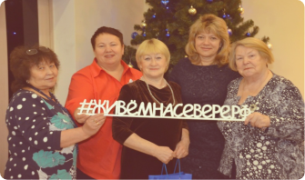
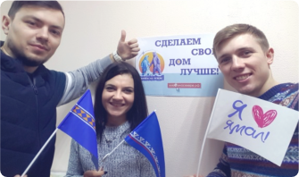
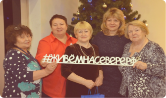
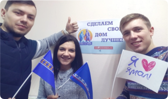

Как мы рассказывали
о ресурсе «Живем на Севере»
 



Еще раз о том, что такое информационный
ресурс "Живем на Севере"
Главные принципы работы
ресурса «Живем на Севере»
Прямое участие жителей в принятии решений властями.
Гарантия реализации решений, принятых большинством.
Отрытость и прозрачность результатов голосования.
Настоящий ямалец задумывается над тем, как сделать жизнь в своем городе, районе, дворе уютнее, комфортнее.
Портрет активного ямальца
Возраст
От 30 до 44 лет
более 46%
Пол
65% женщины
35% мужчины
Решения,
принятые вместе
491
опрос
РЕШАЙ
461 265
голосов
308
обсуждений
ПРЕДЛАГАЙ
736 020
голосов
Воронка
4933 идей предложено
3309 идей вынесено на голосование
718 идей взято в реализацию
228 идей реализовано
Опрос по теме благоустройства в рамках реализации мероприятий приоритетного проекта «Формирование комфортной городской среды"
I этап - 9 января - 9 февраля 2018 года на платформе "Решай" информационного ресурса «Живем на Севере" состоялось предварительное голосование
II этап - 18 марта 2018 года на территориальных счетных участках в муниципальных образованиях жители проголосовали за объекты, которые будут благоустроены в 2018-2019 годах
187 объектов
66 017 голосов
127 объектов
225 309 голосов
Опрос по определению приоритетных направлений межрегиональной программы «Сотрудничество»
I этап - 15 августа - 8 сентября 2018 года на платформе "Решай" информационного ресурса «Живем на Севере"
II этап - 9 сентября 2018 года на территориальных счетных участках в муниципальных образованиях
66 017 голосов
326 548 голосов
Итоги голосования
РЕМОНТ ДОРОГ МЕЖДУ ГОРОДАМИ И ПОСЕЛЕНИЯМИ В ЯМАЛО-НЕНЕЦКОМ АВТОНОМНОМ ОКРУГЕ
МЕДИЦИНСКИЕ И САНАТОРНЫЕ УСЛУГИ
ЗАВЕРШЕНИЕ СТРОИТЕЛЬСТВА ДОРОГИ САЛЕХАРД-НАДЫМ
ПРОГРАММА ПЕРЕСЕЛЕНИЯ НА ЮГ ТЮМЕНСКОЙ ОБЛАСТИ
СОЦИАЛЬНЫЕ ВЫПЛАТЫ И ЛЬГОТЫ
УВЕЛИЧЕНИЕ ОБОРОТА ПРОДОВОЛЬСТВЕННЫХ ТОВАРОВ ТЮМЕНСКИХ И ЯМАЛЬСКИХ ПРОИЗВОДИТЕЛЕЙ
ПРЕДОСТАВЛЕНИЕ ЗЕМЕЛЬНЫХ УЧАСТКОВ МНОГОДЕТНЫМ СЕМЬЯМ В ТЮМЕНСКОЙ ОБЛАСТИ
А теперь по каждому
муниципальному образованию
в отдельности
г. Губкинский
7754пользователя
136 604голоса
53обсуждения
6реализованных идей
Самые популярные
опросы
«Город для нас»
5675голосов
Детский игровой комплекс мкр.13, д.61
1061голос
«Учитель года - 2018»
7837голосов
Харина Анастасия Витальевна, учитель начальных классов МБОУ "ООШ №3"
2445голосов

«Воспитатель года - 2018»
4526голосов
Яранцева Марина Валерьевна, воспитатель МАДОУ "Радость"
1214голосов
Самые популярные
обсуждения
«Мой учитель». К профессиональному празднику выбираем лучшего педагога общеобразовательной организации города.
59идей предложено
Организация работы с молодежью
48идей предложено
«Воспитатель по призванию». Выбираем лучшего воспитателя дошкольной образовательной организации
39идей предложено
г.Лабытнанги
4895пользователей
260296голосов
68обсуждений
92реализованных идей
Самые популярные
опросы
Предприниматель года - 2017
8174голоса
ООО «ЭдъЮль» - Кухарук Геннадий Владимирович, ночной клуб «Зодиак»
2764голоса
Приоритетные направления программы "Сотрудничество"
8184голосов
Приоритетные направления программы "Сотрудничество"
1489голосов
Лучший предприниматель в сфере оказания услуг
7508голосов
ИП Ковалева Наталья Викторовна – перевозка грузов
3463голоса
Самые популярные
обсуждения

Предприниматель года - 2017
71идея предложено

Живущие на Севере
48идея предложена

Гордость твоя, Лабытнанги!
45идей предложено
г. Муравленко
1818пользователей
22562голоса
41обсуждение
12реализованных идей
Самые популярные
опросы
Изучение мнения жителей города Муравленко
4124голоса
Ремонт дорог между городами и поселениями в Ямало-Ненецком автономном округе
911голосов
Какие творческие объединения МАУДО были бы интересны вашему ребенку?
1764 голоса
"Робототехника" (программирование и конструирование роботов)
99 голосов
Благоустройство общественных территорий в 2019 году
1692 голоса
Микрорайон Озерный - пешеходная зона по ул. Дружбы народов
272голоса

Самые популярные
обсуждения

Диалог органов местной власти с населением
35 идей предложено

Фестиваль "Белые ночи Муравленко"
30 идей предложено

Ремонт улично - дорожной сети
29идей предложено
г. Новый Уренгой
4482пользователя
247947голосов
95обсуждений
4реализованных идеи
Самые популярные
опросы
Выбираем территории благоустройства 2019 года
55449голосов
Городская площадь первый этап (пешеходная зона по улице Интернациональной)
5214голосов

Установка детских площадок в 2019 году
23419голосов
Микрорайон Мирный, д. 1/4 (детская площадка)
4298голосов

Выбираем территории благоустройства 2018 года
8926голосов
Спортивный многофункциональный общественный комплекс под открытым небом по ул. 26 съезда КПСС (район путепровода)
2153голоса
Самые популярные
обсуждения
Выберем вместе тематику Ледового городка 2019
91идей предложено

Формирование комфортной городской среды
78идей предложено

Развитие внутреннего туризма
51 идей предложено
г. Ноябрьск
4359пользователей
73567голосов
59обсуждений
7реализованных идей
Самые популярные
опросы
Приоритетные направления программы "Сотрудничество
15371голос
МЕДИЦИНСКИЕ И САНАТОРНЫЕ УСЛУГИ
2938 2938

Южные ворота Ямала
6603голоса
Реализация города как центра окружной медицины
25762576

Приоритетные направления развития добровольчества в городе
3356голосов
Социальное волонтёрство (оказание помощи незащищенным категориям граждан)
572голоса

Самые популярные
обсуждения

Спортивный досуг в зимний период
72идеи предложено

Организация авиаперелетов из Ноябрьска
51идея предложена

Обновление Детского парка
49идей предложено
г. Салехард
4596пользователей
50338голосов
58обсуждений
20реализованных идей
Самые популярные
опросы
Определение рейтинга необходимых населению спортивных объектов
6971голос
Стрелковый тир (пулевая стрельба, практическая стрельба)
2930голосов

Опрос жителей Ямало-Ненецкого автономного округа
5707голосов
ЗАВЕРШЕНИЕ СТРОИТЕЛЬСТВА ДОРОГИ САЛЕХАРД-НАДЫМ
1307голосов
"Формирование комфортной городской среды" в 2019 году
4238голосов
Благоустройство территории Салехардского центра молодежи
386голосов

Самые популярные
обсуждения

Присвоение наименований новым улицам города
66идей предложено

Городской сад
51идеи предложено

Стратегия социально-экономического развития муниципального образования город Салехард до 2030 года
30идей предложено
Красноселькупский район
849пользователей
7679голосов
47обсуждений
8реализованных идей
Самые популярные
опросы
Приоритетные направления программы "Сотрудничество"
1804голоса
ПРОГРАММА ПЕРЕСЕЛЕНИЯ НА ЮГ ТЮМЕНСКОЙ ОБЛАСТИ
464голоса
Благоустройство села Красноселькуп
441голос
Общественная спортивно-игровая площадка по ул. Нагорная
174 голоса

Информация о спортивных мероприятиях
320 голосов
Афиши, информационное табло
103 голоса

Самые популярные
обсуждения

Благоустройство территории
27идей предложено

Школьный автобус
14идей предложено

Предлагайте свои идеи программы празднования предстоящего Дня района
13идей предложен
Надымский район
3381пользователь
18821голосов
38обсуждений
8реализованных идей
Самые популярные
опросы
Приоритетные направления программы "Сотрудничество"
6632голоса
РЕМОНТ ДОРОГ МЕЖДУ ГОРОДАМИ И ПОСЕЛЕНИЯМИ В ЯМАЛО-НЕНЕЦКОМ АВТОНОМНО ОКРУГЕ
1224 голоса
Востребованные направления на воздушном транспорте
1129 голосов
Сочи
318 голосов

Название Стены памяти в сквере Воинской Славы
965 голосов
Никто не забыт, ничто не забыто
371 голоса

Самые популярные
обсуждения

Проведение патриотической акции в рамках празднования 73 годовщины со Дня Победы
76идей предложено

Фестиваль социально ориентированных некоммерческих организаций «Гражданская инициатива»
36идей предложено

Символ Надымского района
25 идей предложено
Приуральский район
1429пользователей
18223голоса
33обсуждения
19реализованных идей
Самые популярные
опросы
Опрос жителей Ямало-Ненецкого автономного округа
2001 голос
РЕМОНТ ДОРОГ МЕЖДУ ГОРОДАМИ И ПОСЕЛЕНИЯМИ В ЯМАЛО-НЕНЕЦКОМ АВТОНОМНО ОКРУГЕ
516голосов
Благоустройство общественных территорий в поселке Харп
696 голосов
Устройство спортивно-игровой площадки по ул. Гагарина возле катка.
258 голосов

Благоустройство общественных территорий в селе Белоярск
663 голоса
Устройство спортивно-игровой площадки по ул. Октябрьская в районе д.24.
195 голосов
Самые популярные
обсуждения

Развитие улично-дорожной сети села Аксарка
43идей предложено

Благоустройство села Харсаим
18 идей предложено
Проведение субботника на территории села Аксарка
13идей предложено
Пуровский район
2160пользователей
147316голосов
89обсуждений
20реализованных идей
Самые популярные
опросы
Какая общественная территория поселка Уренгой нуждается в благоустройстве ?
4586голосов
Центральный парк
1960голосов

Какую парковую зону поселка Пурпе необходимо благоустроить в 2019 году?
4586 4586
Парковую зону в районе храма
1960 голосов

"Какую из общественных территорий города Тарко-Сале необходимо благоустроить в первую очередь в 2018 году?
2557 голосов
Парк Больничного городка по улице Ленина
951 голос

Самые популярные
обсуждения

Ханымей: В 2019 году в рамках проекта "Формирование комфортной городской среды", будет благоустроен парк по ул. Центральной. Бюсты каких писателей вы хотели бы видеть на аллее писателей?
33 идей предложенo

Уренгой: в каком микрорайоне поселка необходимо установить площадку для выгула собак в первую очередь?
29 идей предложено
Ханымей: Какие темы необходимо обсудить на семинаре-практикуме для предпринимателей?
21 идея предложено
Тазовский район
3863пользователя
47066голосов
81обсуждение
12реализованных идей
Самые популярные
опросы
Сотрудничество
1721 голос
РЕМОНТ ДОРОГ МЕЖДУ ГОРОДАМИ И ПОСЕЛЕНИЯМИ В ЯМАЛО-НЕНЕЦКОМ АВТОНОМНО ОКРУГЕ
495 голосов

Конкурс "Общественное признание 2018"
1300 голосов
Федоров Сергей Леонидович- МКОУ Антипаютинская школа-интернат , учитель истории
273 голоса

Стратегия социально-экономического развития
1037 голосов
Качество питьевой воды;
144голоса

Самые популярные
обсуждения

Организация проведения национальных праздников
58идей предложено

Организация досуга молодежи
52 идей предложено
Благоустройство села Антипаюта в рамках проекта «Бюджетная инициатива граждан»
33идей предложено
Шурышкарский район
1150пользователей
31986голосов/p>
55 обсуждений
27реализованных идей
Самые популярные
опросы
Приоритетные направления программы "Сотрудничество"
2629 голосов
ПРОГРАММА ПЕРЕСЕЛЕНИЯ НА ЮГ ТЮМЕНСКОЙ ОБЛАСТИ
547 голосов

Благоустройство в селе Мужи
1736 голосов
Устройство детской площадка в южной части села по ул. Рыбацкая
957 голосов

Благоустройство в селе Азовы
1474 голоса
Эскиз №2
930 голосов

Самые популярные
обсуждения
Деятельность общественно-политической газеты "Северная панорама"
39 идей предложено

Присвоение имени Микуля Шульгина улице или библиотеке
37 идей предложено

Социальные услуги для населения
16 идей предложено
Ямальский район
4914пользователей
92741голосов
70 обсуждений
33реализованные идеи
Самые популярные
опросы
Приоритетные направления программы "Сотрудничество"
2877 голосов
МЕДИЦИНСКИЕ И САНАТОРНЫЕ УСЛУГИ
639 голосов
Конкурс "Создай свою мечту" в с. Новый Порт"
1516 голосов
Проект "Детский парк отдыха «Мамонтенок»"
825 голосов

"Конкурс "Создай свою мечту" в с. Яр-Сале"
1493 голоса
Проект "Территория семейного отдыха «Единение"
1122 голоса

Самые популярные
обсуждения

Развитие малого и среднего предпринимательства в Ямальском районе
102 идеи предложено

Ямальский молодёжный центр "Импульс"
27 идей предложено

"День учителя - 2018"
24 идей предложено
В благодарность
за активность
За каждое голосование, идею,
комментарий, начислялись
баллы, которые можно обменять
на полезные сувениры или
услуги.
За прошедший
год было начислено
12 368 711 бонусных
баллов
С днем рождения
«Живем на Севере»
Год назад, 24 октября 2017 года, на Ямале начал свою работу информационный ресурс «Живём на Севере». Он стартовал в Лабытнанги и Муравленко, и до конца года все муниципальные образования региона присоединились к проекту. Портал «Живём на Севере» стал настоящей площадкой для обсуждения не только вопросов местного значения, но и стратегических документов регионального и федерального уровня.
Более 70 мероприятий, посвящённые годовщине ресурса, проведены во всех городах и районах округа, около 5 тыс. граждан приняли участия в праздничных мероприятиях.